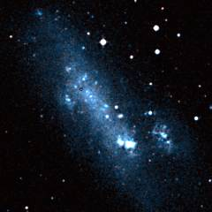
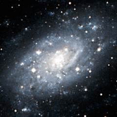
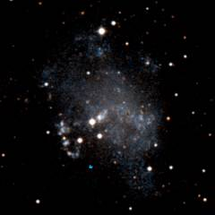
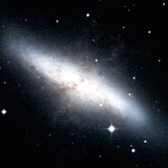
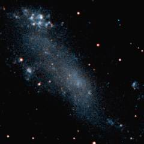
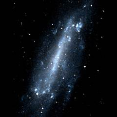
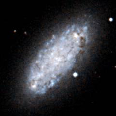
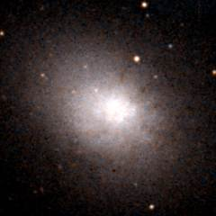
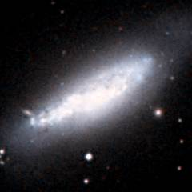

تجمع مجرات M81
مجموعة M81 هي مجموعة مجرات شهيرة أخرى لأنها تحتوي على زوج المجرات الشهير M81 / M82 الذي تم اكتشافه عام 1784. NGC 2403 هي مجرة حلزونية بارزة أخرى على الجانب الأيمن من المجموعة.
M82 هي مثال مشهور لمجرة النجوم المتفجرة starburst galaxy - فهناك الكثير من عمليات نشأة النجوم التي تحدث في هذه المجرة.
أدناه - ثلاث مجرات في الجانب الأيمن من مجموعة M81. NGC 2366 (على اليسار) هي مجرة غير منتظمة حدث فيها الكثير من تكوين النجوم حديثًا. يُعرف الجزء الأكثر سطوعًا من هذه المجرة باسم NGC 2363 - وهي منطقة HII ضخمة (سديم انبعاثي) تشكلت فيها الكثير من النجوم الزرقاء اللامعة. NGC 2403 (في الوسط) هي ثاني أكبر مجرة في مجموعة M81. هولمبرج الثاني (على اليمين) هي واحدة من تسع مجرات ذات سطوع سطحي منخفض تم إدراجها بواسطة إريك هولمبرج في الخمسينيات، ثلاث منها مرتبطة بمجموعة M81.
 |
 |
 |
| NGC 2366 |
NGC 2403 |
Holmberg II |
مجرات التجمع المجري M81
هذه قائمة بأهم المجرات في مجموعة M81. المجرات الرئيسية الثلاث في هذه المجموعة هي M81، وNGC 2403، وNGC 4236.
| الاسم |
الإحداثيات الاستوائية
مطلع مستقيم RA ميل Dec |
القدر الأزرق |
النوع |
الحجم الزاوي
دقائق قوسية(′) |
الحجم
(ألف سنة ضوئية) |
سرعة التقهقر
(كم/ث) |
أسماء أخرى |
| UGC 3794 |
07 22.9 |
+77 48 |
17.8 |
SBm |
1.0 |
5 |
? |
- |
| NGC 2366 |
07 28.9 |
+69 12 |
11.9 |
Irr |
8.1 |
30 |
134 |
- |
| UGCA 133 |
07 34.2 |
+66 53 |
15.9 |
E |
3.0 |
10 |
? |
DDO 44 |
| NGC 2403 |
07 36.8 | +65 36 |
8.9 |
SBc |
21.9 |
75 |
181 |
- |
| Holmberg II |
08 19.1 | +70 43 |
11.1 |
Irr |
7.9 |
30 |
207 |
UGC 4305 |
| M81dwA |
08 23.2 | +71 02 |
16.5 |
Irr |
1.8 |
5 |
163 |
PGC 23521 |
| UGC 4459 |
08 34.2 | +66 11 |
15.0 |
Irr |
1.5 |
5 |
95 |
DDO 53 |
| UGC 4483 |
08 37.1 | +69 47 |
15.5 |
Irr |
1.1 |
5 |
217 |
- |
| UGC 4945 |
08 55.9 | +72 01 |
17? |
E |
1.3 |
5 |
700 |
UGCA 158 |
| Holmberg I |
09 40.5 | +71 11 |
13.2 |
Irr |
3.6 |
15 |
208 |
UGC 5139 |
| NGC 2976 |
09 47.3 | +67 55 |
10.9 |
Sc |
5.9 |
20 |
94 |
- |
| M81 |
09 55.6 | +69 04 |
7.9 |
Sab |
26.9 |
95 |
50 |
NGC 3031 |
| M82 |
09 55.8 | +69 41 |
9.2 |
Irr |
11.2 |
40 |
296 |
NGC 3034 |
| Holmberg IX |
09 57.7 | +69 03 |
14.4 |
Irr |
2.5 |
10 |
134 |
UGC 5336 |
| NGC 3077 |
10 03.4 | +68 44 |
10.6 |
Irr |
5.4 |
20 |
102 |
- |
| UGC 5428 |
10 05.1 | +66 33 |
16.0 |
E |
0.9 |
5 |
-22 |
DDO 71 |
| UGC 5423 |
10 05.5 | +70 22 |
15.9 |
Irr |
0.9 |
5 |
424 |
M81dwB |
| UGC 5442 |
10 07.1 | +67 49 |
15.4 |
E |
1.8 |
5 |
78 |
- |
| DDO 78 |
10 26.5 | +67 40 |
15.8 |
E |
2.0 |
5 |
? |
PGC 30664 |
| IC 2574 |
10 28.4 | +68 25 |
10.8 |
SBm |
13.2 |
45 |
142 |
- |
| UGC 5692 |
10 30.6 | +70 37 |
13.5 |
Sm |
3.2 |
10 |
262 |
DDO 82 |
| UGCA 220 |
10 49.3 | +64 43 |
16.9 |
Irr |
1.7 |
5 |
? |
- |
| UGC 5918 |
10 49.6 | +65 32 |
15.1 |
Irr |
2.4 |
10 |
452 |
DDO 87 |
| UGC 6456 |
11 28.0 | +78 59 |
15.9 |
Irr |
1.4 |
5 |
-61 |
- |
| NGC 3738 |
11 35.8 | +54 31 |
12.1 |
Irr |
2.5 |
10 |
406 |
- |
| NGC 4236 |
12 16.8 | +69 28 |
10.1 |
SBd |
21.9 |
75 |
87 |
- |
| NGC 4605 |
12 40.0 | +61 37 |
10.9 |
SBc |
5.8 |
20 |
272 |
- |
| UGC 8201 |
13 06.5 | +67 42 |
12.9 |
Irr |
3.5 |
10 |
121 |
DDO 165 |
| NGC 5204 |
13 29.6 | +58 26 |
11.7 |
Sm |
5.0 |
15 |
329 |
- |
|
- العمود 1: الاسم الشائع للمجرة.
- العمود 2: المطلع المستقيم لعصر 2000.
- العمود 3: الميل لعصر 2000.
- العمود 4: القدر الظاهري الأزرق للمجرة.
- العمود 5: نوع المجرة: E = إهليلجية، S0 = عدسية، Sa, Sb, Sc, Sd = حلزونية، SBa, SBb, SBc, SBd = حلزونية محدبة، Sm, SBm, Irr = غير منتظمة.
- العمود 6: القطر الزاوي للمجرة (دقيقة قوسية).
- العمود 7: قطر المجرة (بالآلاف من السنوات الضوئية).
- العمود 8: السرعة الانزياحية (كم/ثانية) للمجرة بالنسبة إلى إشعاع الخلفية الكونية الميكروي.
- العمود 9: أسماء أخرى للمجرة.
المراجع:
- Karachentsev I, Dolphin A, Geisler D, Grebel E, Guhathakurta P, Hodge P, Karachentseva V,
Sarajedini A, Seitzer P, Sharina M, (2002), The M 81 group of galaxies: New
distances, kinematics and structure. Astron and Astrophys, 383, 125.
- van Driel W, Kraan-Korteweg R, Binggeli B, Huchtmeier W, (1998), An HI line search for
optically identified dwarf galaxy candidates in the M 81 group. Astron and
Astrophys Supp, 127, 397.
- Schmidt K, Priebe A, Boller T, (1993), Nearby Galaxies. Astron Nachr, 314, 371.
The HyperLeda Database, (2003).
أدناه - ثلاث مجرات أخرى من مجموعة M81. M82 (على اليسار) هي مثال مشهور جدًا لمجرة انفجار نجمي - حيث تحتوي على الكثير من النجوم الشابة واللامعة، ويرجع ذلك على الأرجح إلى أن لقاءً قريبًا مع جارتها الأكثر ضخامة M81 قد أثار تكوين الكثير من النجوم الجديدة. على النقيض من ذلك، فإن IC 2574 (في الوسط) هي مجرة باهتة جدًا على الرغم من أنها تقريبًا بنفس حجم M82. NGC 4236 (على اليمين) هي مجرة كبيرة في الجانب الأيسر من مجموعة M81.
 |
 |
 |
| M82 |
IC 2574 |
NGC 4236 |
في الأسفل تظهر مجرة M81. هذه المجرة هي المجرة المهيمنة في المجموعة وهي مماثلة في الحجم لمجرتنا درب التبانة. تُعد هذه المجرة واحدة من ألمع المجرات في السماء، وعلى الرغم من أنها خافتة جدًا بحيث لا يمكن رؤيتها بالعين المجردة، إلا أنها مجرة سهلة العثور عليها باستخدام المنظار إذا كنت تعرف أين تبحث.
أدناه - ثلاث مجرات قزمة لامعة في مجموعة M81 . NGC 2976 (نبدأ من اليسار) هي مجرة حلزونية صغيرة تقع على بعد حوالي مليوني سنة ضوئية خلف M81. NGC 3077 (في الوسط) أقرب بكثير إلى M81 - حيث يفصل بينهما حوالي 140 ألف سنة ضوئية. NGC 4605 (على اليمين) هي مجرة حلزونية صغيرة تقع على الحافة اليسرى من المجموعة.
 |
 |
 |
| NGC 2976 |
NGC 3077 |
NGC 4605 |
| خصائص مجموعة M81 المجرية |
|---|
| الإحداثيات الاستوائية |
RA=10h00m Dec=+68° |
| الإحداثيات المجرية |
l=145° b=+40° |
| الإحداثيات المجرية الفائقة |
L=40° B=0° |
| المسافة إلى مركز المجموعة المجرية |
12 مليون سنة ضوئية |
| عدد المجرات الكبيرة في المجموعة |
7 |